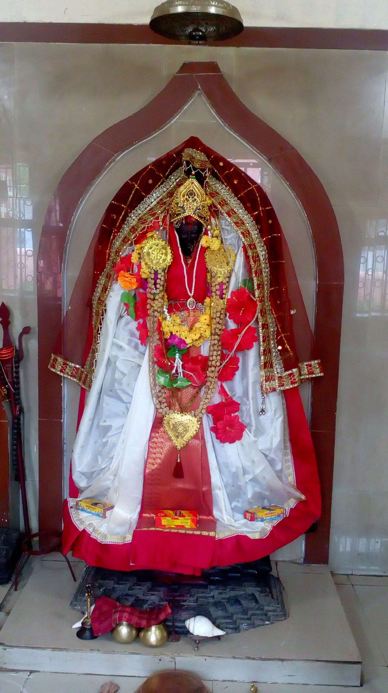
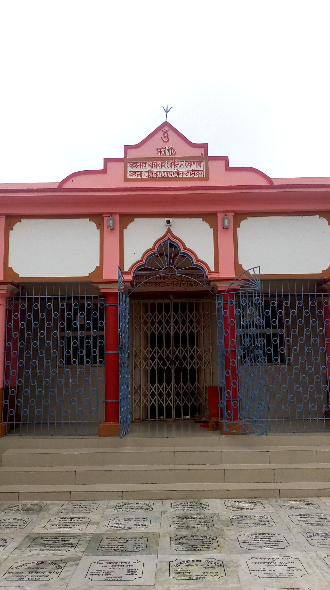
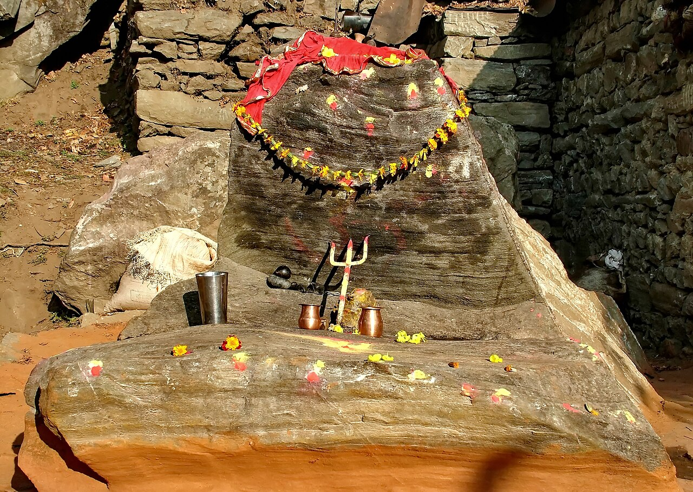
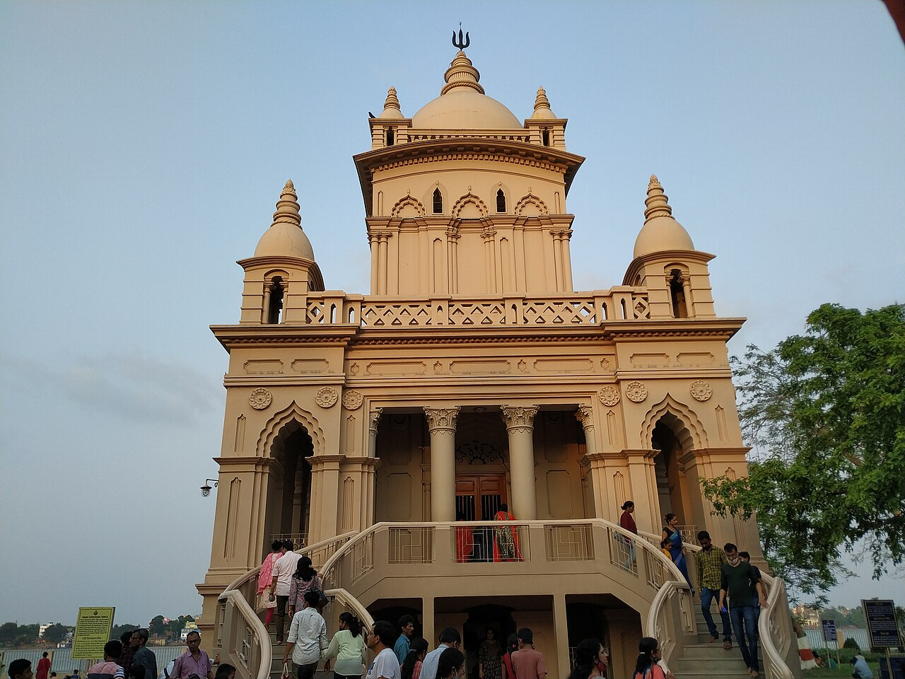
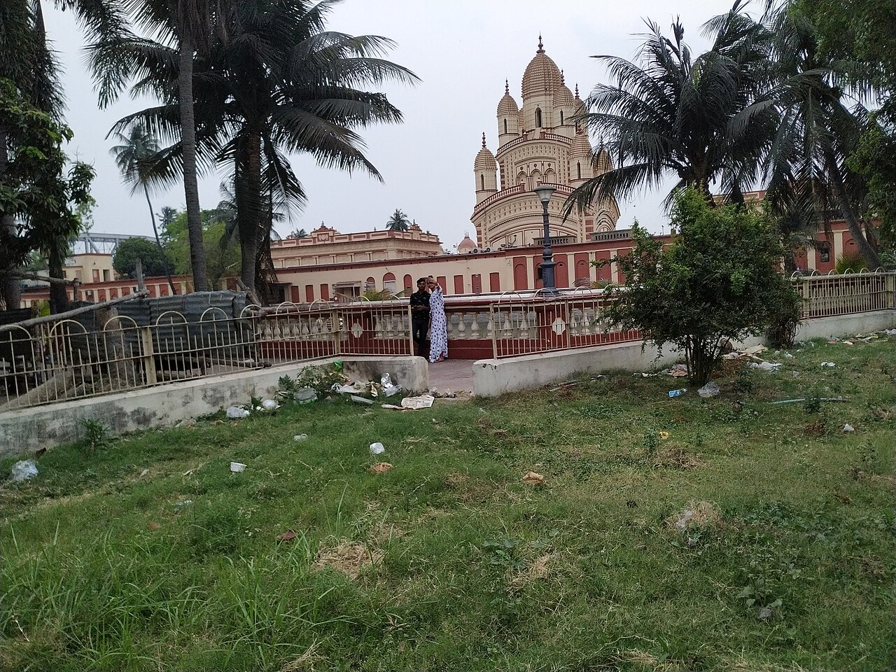
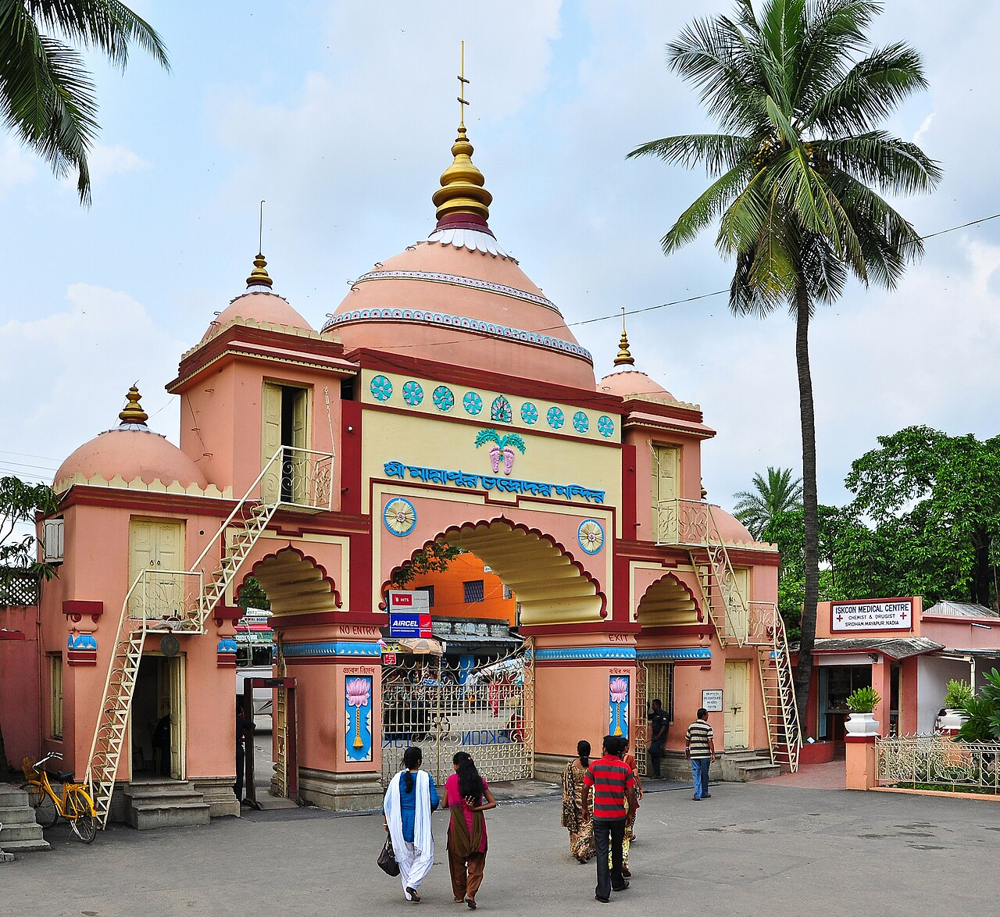
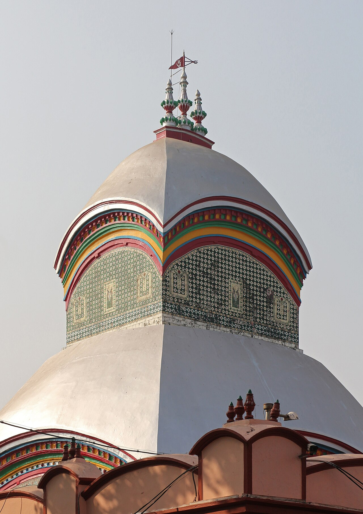
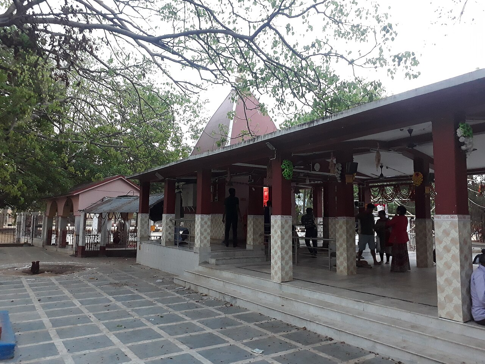
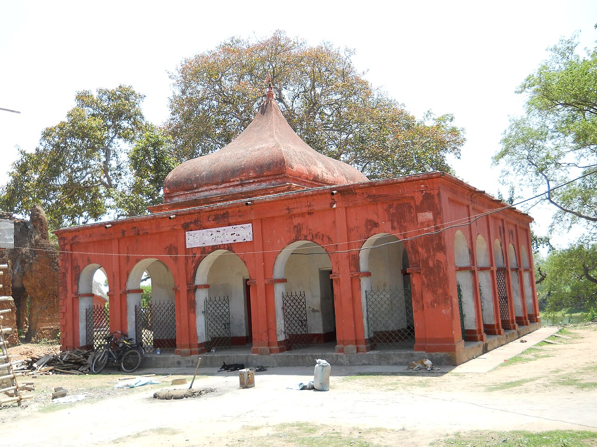
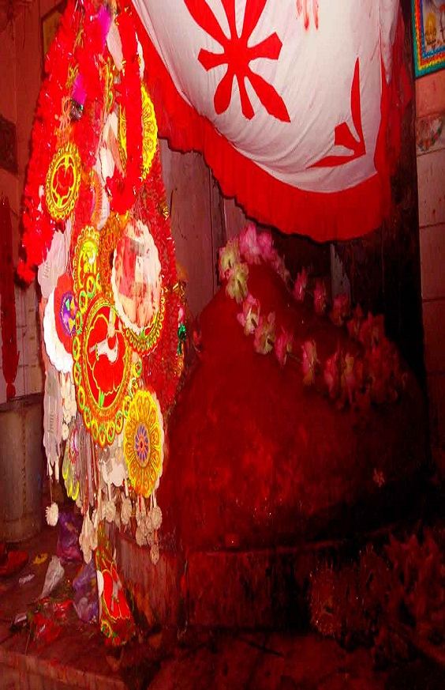

Home · States · West Bengal

India · West Bengal · Shakti Peetha — Lips

India · West Bengal · Shakti Peetha — Left arm

India · West Bengal · Shakti Peetha — Brow / between eyebrows

India · West Bengal · Headquarters of Ramakrishna Math & Mission
India · West Bengal · Shakti Peetha — Left leg

India · West Bengal · Rani Rashmoni’s temple linked to Sri Ramakrishna

India · West Bengal · ISKCON world headquarters on the Ganga–Jalangi
India · West Bengal · Shakti Peetha — Right big toe

India · West Bengal · Shakti Peetha — Right toes

India · West Bengal · Shakti Peetha — Waist

India · West Bengal · Shakti Peetha — Crown
India · West Bengal · Shakti Peetha — Right wrist

India · West Bengal · Shakti Peetha — Necklace ornament
India · West Bengal · Shakti Peetha — Right shoulder
India · West Bengal · Shakti Peetha — Left ankle
Verify before you travel
Use these government / trust portals for current darshan rules, tickets, and notices.